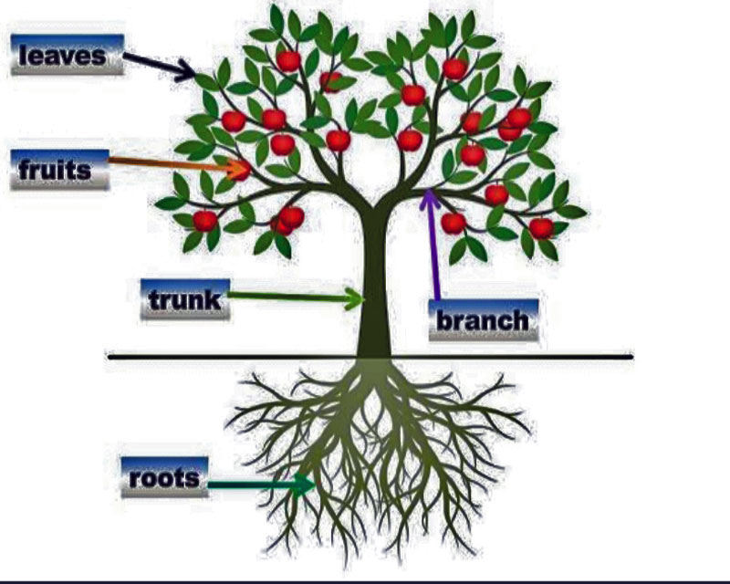

Axe’s deception: A devided society can never realize its potential.
An axes and a tree
An axe infiltrated a forest and formed a friendship with a tree by cleverly convincing the tree that its handle was made from one of its own branches. The trusting tree welcomed the axe and provided support, mistakenly thinking it was part of their own community. The axe began its mission of cutting down the tree, its roots, leaves, and branches, keep striking while the tree remained silent, hopeful that it would eventually benefit from the axe’s actions. However, when the forest was completely destroyed, it became evident that no handle had been crafted from the tree’s branches.
Divission.
While a tree can be divided based on the differences of its parts, such as branches, leaves, and roots, the division of a human being is far more complex. Humans possess a multitude of differences, ranging from tribal and national affiliations to education levels and social classes. These differences provide grounds for division among people, same divisions found within a tree. The diversity among human beings is vast, from aspects of culture, beliefs, perspectives, and experiences. which, mostly divide humanity.
Deception.
Deception involves employing a technique of blending elements of truth and falsehood, making it challenging to separate the two. It can be compared to trying to separate milk and water once they have been mixed together. Similarly, when deception is used, mixing truth with falsehood, it becomes difficult to difficult to separate the truth from the falsehood. The only options remaining are either to reject the entire mixture or accept it as it is, without being able to distinguish the individual components.
A tree’s Divission.
Different individuals or groups may perceive and value different parts of a tree based on their specific interests and needs. A vegetarian may focus on the leaves of a tree as a source of edible greens, while a dietitian may place importance on the fruits for their nutritional value. Similarly, a carpenter may prioritize the wood found in the tree’s trunk, and a herbal doctor may view the roots and bark as valuable for medicinal purposes.

These varying perspectives and preferences are a result of the diverse ways in which humans interact with and benefit from nature. However, it is important to note that while different parts of a tree may hold significance to different people, it doesn’t necessarily mean that they seek to destroy or destabilize the tree’s overall nature. In fact, many individuals and groups advocate for sustainable practices that ensure the preservation and well-being of trees and their ecosystems. Overall, while it is true that different individuals may focus on different aspects of a tree, it is possible to find a balance where the tree can coexist with and provide benefits to various groups without being completely destabilized or destroyed.
Moral of the story.
A fragmented community can indeed be vulnerable to exploitation by more unified or organized groups. Betrayal or sabotage from within can be just as detrimental as external threats, as it weakens the cohesion and strength of the community. The power of division lies in its ability to distract and disengage people from working together towards common goals. To counteract this, it is crucial for communities to strive for unity despite their diversity. Recognizing and embracing the value of different perspectives, backgrounds, and skills can lead to a stronger and more resilient collective. By fostering a sense of shared purpose and promoting collaboration, a united community can maximize its potential and achieve greater progress.
Motivation and responsibility play vital roles in maintaining this unity. When individuals lack motivation or fail to take responsibility for their actions, it can result in a loss of human potential. By actively engaging in personal growth, taking ownership of one’s actions, and fostering a collective sense of responsibility, individuals can contribute to the well-being and success of the entire community. In summary, the unity of a community is essential for its strength and resilience. By overcoming division and working together, a community can harness its diverse talents and interests to achieve shared goals, while motivation and responsibility are key factors in unlocking human potential and sustaining collective progress.